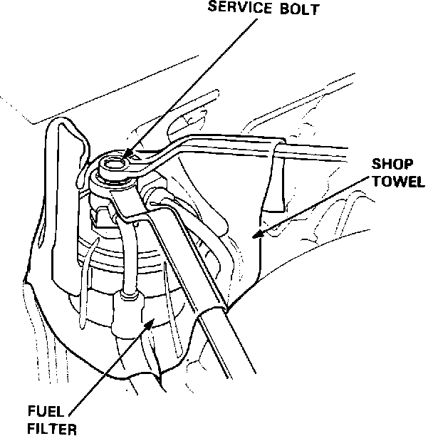

Fuel Pressure Release: Service and Repair
Loosen The Service Bolt:

WARNING: Do not smoke while working on the fuel system. Keep open flames or sparks away from the work area. Be sure to relieve fuel pressure while the engine is OFF.
1. Disconnect the battery negative cable from the battery.
2. Remove fuel filler cap.
3. Use a box end wrench on the 6mm service bolt at the fuel rail, while holding the special banjo bolt with another wrench.
4. Place a rag or shop towel over the 6mm service bolt.
5. SLOWLY loosen the 6mm service bolt one complete turn.
NOTE:
- A fuel pressure gauge can be attached at the 6 mm service bolt hole.
- Always replace the washer between the service bolt and the special banjo bolt whenever the service bolt is loosened.
- Replace all washers whenever the bolts are removed.